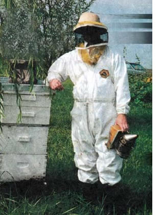
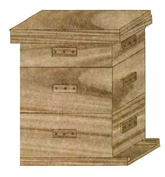
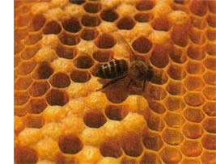
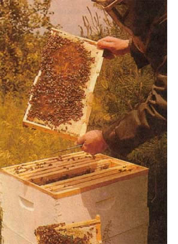

According to the National Honey Board (that's right), the United States' honey crop last year brought in 145 million dollars. While beekeeping is both a hobby and a devotion for thousands across the country, it can also be a lucrative home business. I have met many people who are intrigued by the idea of keeping bees but who have never given it a try, simply because they don't know where to begin. For such a big business, there is precious little information out there on how to get a bee enterprise's wheels turning. What follows is my personal blueprint for success in the field. Like any other worthwhile accomplishment, the job is at once easy and arduous, a labor of love with a healthy dose of sweat equity.
A well cared-for hive of bees can be expected to produce from 30 to 100 pounds of honey or more per season in most parts of the country. Which means that, even after you and your family have stored all you can use, you still should have plenty left over to sell. I have supplemented my income significantly by keeping bees and selling honey.
Keeping bees also makes good garden sense. With so many bees in the wild having been killed off by disease and parasites, your garden may be suffering from insufficient pollination. Having your own bees ensures adequate pollination and generally results in noticeably higher yields from your vegetable plants.
It's also possible to rent your bees out to farmers and serious gardeners in many areas of the country as a source of even more income.
A beehive consists of supers, covers, bottom board, frames and foundation. The supers, also called hive bodies, are basically wooden boxes without tops or bottoms that are stacked on top of the bottom board and each other to create the hive. A flat piece of wood called an inner cover is placed on top of the uppermost super to close it up, and an outer cover is placed atop the entire hive to make it weather tight. Click here to for a look at how these parts go together.
Ten rectangular wooden frames are inserted into each super and are used to hold sheets of beeswax called foundation. This foundation gives the bees a place to build their wax combs neatly into each frame so that the frames can be removed from the hive for such purposes as harvesting the honey.
Exactly how many supers you will need for each hive depends on where you live and how severe the winters are. In my home state of Ohio, the general practice is to use two deep supers for the bees to live in, and three shallow supers per hive to collect the honey.
In more tropical areas, you may only need one deep super. Although supers come in sizes other than just deep and shallow, deep supers provide ample living space for the bees, and any super larger than a shallow size can become extremely heavy when filled with honey. For my beehives, I use only deep and shallow supers.
Hive construction, made simple.
BEEHIVE PLANS COPYRIGHT©1998 KEITH RAWLINSON, ILLUSTRATIONs BY RODNEY A. OKYNE
Keeping bees is a good, sure way to put some extra money in your pocket, pollen in your plants, and honey in your cupboard. You can certainly purchase all the equipment you'll need (see Suppliers, below), but some of you more hands-on folk may prefer to build your own hives. Not only will this save you some dough, it'll also give you a close-up look at the inner workings of the place your bees will call home. (See construction diagrams of the supers and covers and bottom board.)
All items within this set of plans are built with 3/4" board. The type of wood is really not all that important, so I generally use the cheapest I can find, as long as the wood is solid and without cracks.
It is extremely important to make sure all eight corners of each super are matched up before driving any nails. After glue is applied and the joints are slipped together, match up each corner one-by-one, and drive in the nail closest to the matched corner to hold it in place while you nail the remainder of the joint. This is especially necessary if working with slightly warped or cupped boards. With perfectly straight boards, there is generally no problem.
When nailing the top corners of the supers, be sure to place the corner nail down low enough so that it does not go into the rabbet joint instead of the wood itself.
Remember, it is always a good idea to use plenty of waterproof wood glue when assembling beekeeping equipment. It's better to use too much rather than too little (you can always wipe off the excess), so be generous!
The deep and shallow supers are put together with what I call a tab joint (really a modified box joint). It is nearly as strong as the finger joints used on commercially made equipment, but is much easier to make and requires no special tools.
It may appear at first glance that some of the dimensions are not called out in the plans. However, any that are not directly marked can be calculated from those that are.
Paint the equipment with exterior latex paint. I use white, though the color is not terribly important. A light-colored hive tends to stay cooler in summer. For as little paint as the equipment requires, I spend the extra money and get a pretty high quality paint. It pays me back in longevity of the equipment. Use at least two coats, preferably three or four.
You can shield the outer cover with some sort of sheet metal if you wish, but with adequate paint, this is optional.
Readers who have questions not answered by the above text or drawings should send their queries, along with a self-addressed stamped envelope, to Keith Rawlinson, Box 152, Nova, OH 44859. SUPPLIERS:
The A. I. Root Company
623 W. Liberty Street
Medina, OH 44256
1800-289-7668
Walter T Kelley Co. Inc.
3107 Elizabethtown Road
P. O. Box 240
Clarkson, ICY 42726-0240
(502) 242-2012
Better bee Inc.
8 Meader Road
Greenwich, NY 12834
(518) 692-9669
The New Starting Right With Bees
(Root Publishing, 1988)
A. I. Root Co., Medina OH.
Hive Management
by Richard E. Bonney
(Storey Communications, 1990)
Storey Communications Inc., Pownal, VT
Bee Culture magazine
The A. I. Root Co., Publishers
623 W. Liberty Street, Medina, OH 44256
800-289-7668, ext. 3220
$17 for one year (at presstime).
|
 COURTESY KEITH RAWLINSON Author Keith Rawlinson, decked out in bee suit and hat, displays one of his homemade hives. |
 RODNEY A. OKYNE You don't need to be a master to build this basic beehive |
 CESARLUCAS/THE IMAGE BANK HONEYDRIPPERS: A beekeeper examinesa frame from the hive adequately so they can make it through the winter |
|
 GRANT HEILMAN |
|
|